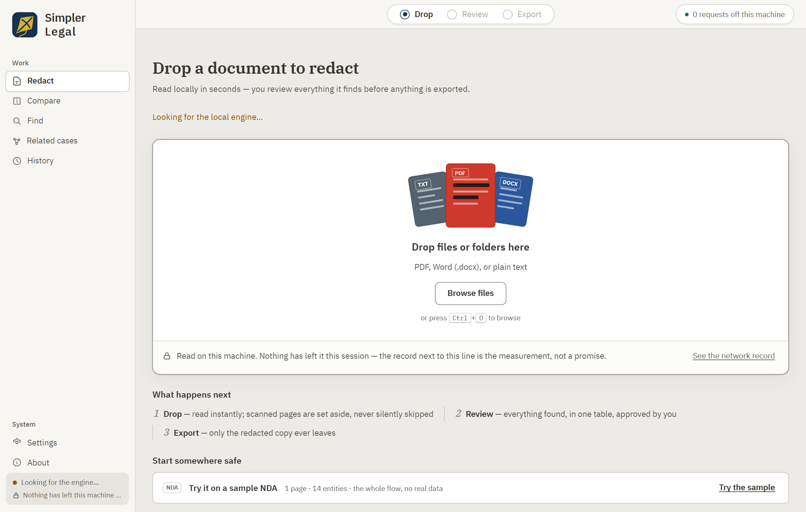
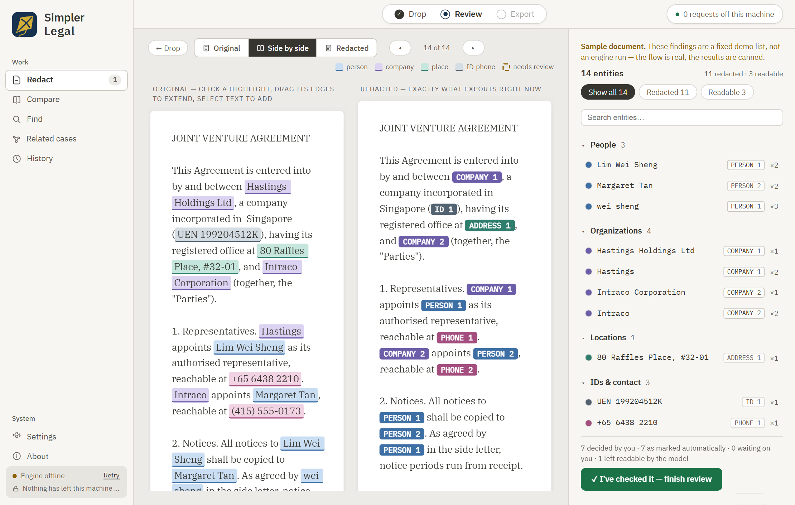
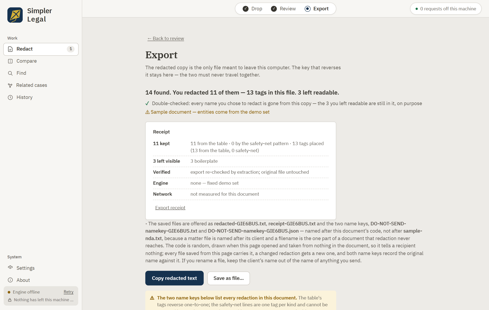

Swap the names in a legal document for tags, check them, then hand it to any AI. The redaction runs on hardware you own: 46 unseen SEC-filed business agreements, zero identity leaks across four consecutive fresh draws. 45 of those documents ran the engine as it stood before it was frozen, and one ran the frozen engine. Court judgments and a firm's own filings are harder, and the evidence says by how much. Nothing exports until you finish the review.
Free · Apache-2.0 · no account, no server of ours, no telemetry · v0.1.0 for Windows, not code-signed

The core claim, live
Ink drawn over text leaves the text in the file, one copy-paste away. Both documents below are real text on this page. The right-hand one is an illustration written in the export's tag format, not a recorded engine run.
It works on the left document. It has nothing to work on in the right one.
Simpler Legal never draws boxes over your document. Everything it redacts is
deleted from the text and replaced with a tag, and a text export is a new file rebuilt
from the cleaned text. A .docx export rewrites your original Word package instead, and is held
back if a check of the finished file finds a listed name still in it. That check has blind
spots, and the IT brief lists every one. Tags follow spellings, not
people: one person can carry two tags, and a bare [Person] does not tell people
apart, so read the copy before you send it. The map from tags back to names is a separate file that
never exports with the document unless you explicitly say so.
Why local isn't a feature toggle
"AI" has meant "send it to a data center" for so long that local sounds like a setting. It isn't — it's the direction of travel reversed. Your documents don't go to the AI. The AI comes to you.
It's the same architecture the AI labs run — a model behind a server — except the server is your laptop and it listens only on 127.0.0.1. That's why there is no per-page pricing, no monthly allowance, no metering: nobody's hardware is doing you a favor. The model is Google's Gemma 4 E2B, not fine-tuned or altered by us. When the app starts it, the file is hashed against the SHA-256 pinned in the repository, the one Hugging Face lists for it at the revision this page links, and a file that does not match is refused. Length has a practical limit: in testing, documents of about 60,000 words ran for about 14 minutes and returned nothing, twice, and nothing yet records why.
The corridor
One corridor, no suite, no workflow product. It does one job.
A contract, a letter, an intake form. It never uploads — there is nowhere to upload to.
A wide sweep finds identities; code removes every copy document-wide; a second pass re-reads the result hunting anything left behind.
Everything found, in one table, with keyboard shortcuts. The frozen engine flags no row as uncertain, so the reading is yours. Nothing exports until you finish.
The redacted copy — plus, separately and only if you ask, the key that maps tags back to names.
The app
If a run is incomplete, or a masked name is still found in the export, the export is held. The last check is yours: nothing exports until you finish the review, and finishing is your sign-off, not the machine's.

Review. Original and redacted side by side, every finding highlighted in place. The count under the table keeps apart what you decided and what stands as the machine marked it, and the receipt carries the same split.

Export. The honest funnel, verify-by-extraction plus a partial-name check, a receipt for your records — then copy the redacted text straight into the AI you use, or save it as a file. The original is never touched.
Measured, published, reproducible
Every accuracy number in this industry is a sentence you're asked to believe. Ours come with the files behind them: the draw manifests, the gold labels, the scorer and every round's board are committed in the repository, and the exhibits below link to them. The full methodology, per-class results and leak ledger have their own page.
EXHIBIT A
Over 260 real public documents — Singapore, US and UK court judgments and SEC agreements — labelled by AI agents we ran ourselves before the engine saw them, and sealed by commit. How far the labels agree with a blind re-judging is measured and published too.
pii-bench/ in the repoEXHIBIT B
Every round draws fresh documents by a fixed rule committed with the draw, and the board publishes as drawn, misses included, each named by class with its diagnosis. The rule was not registered in advance; the research page says when each was committed.
the full measurement recordEXHIBIT C
The engine is frozen with a claims table, each claim beside the record it cites. It unfreezes only if an identity leaks in the frozen configuration on real paper, or the maintainer orders it. Where that table and this site differ, the site's wording is the checked one.
FREEZE.md — the freeze and its claims table| Measurement | Corpus | Result |
|---|---|---|
| SEC-filed business agreements — four consecutive fresh draws, first contact each time | 46 unseen EDGAR agreements, 2001–2026 filings: rounds 5, 6 and 7 and the post-freeze probe. 43 of the 46 contain an identity to leak | Zero identity leaks — gate 100%. Round 4, the draw before, leaked 3 in 1 of its 15, published as drawn |
| Court judgments — the hard genre, latest fresh round, published as drawn | 25 unseen SG + US judgments | 97.7% identity recall · 21/25 leak-free |
| Jurisdiction transfer — the courts configuration from before the round-6 and round-7 fixes | 10 UK judgments it was never tuned for; the frozen configuration has not been run on them | 100.0% identity recall — gate 100% |
| The other direction — what a frontier AI still extracts from the redacted copy | 25 round-4 documents masked before the freeze · 125 questions, scored by a model judge told which answer came from which copy | 0.968 substance-equivalence |
| The post-freeze probe — a document drawn and run after the engine was frozen | 1 agreement, filed 2026-01-21 and in no earlier draw | Zero identity leaks — 3 identity spans in its gold, 0 readable |
| The gold's own agreement — 240 development-set calls re-judged blind | quasi-identifier mask-or-keep calls only; identity labels not sampled | 88.8% agreement (213/240), against 84.6% for answering “keep” every time |
| Court filings in a firm's own shapes — briefs, complaints, letters, a settlement, declarations | 20 public filings, 296 identifiers listed by one AI agent; no second labeller and no sealed gold | Default setting: an identifier still readable in 14 of 20. With the “Our own matter files” setting: 8 of 20 |
Measured 2026-07-19 → 2026-07-24, each row from a committed board, except the firm-filings row (2026-09-15), whose record is a ledger entry. Every number is for the full pipeline with its local model; when the app falls back to its lighter in-app engine it says so, and no number here was measured on that path. Both kinds of row are published — the genre that converged and the one where every fresh draw still finds something new. A vendor that shows you only one number is showing you the wrong one. The measurement record has the methodology and every named miss.
The manifests, the sealed gold (as character offsets, not text), the scorer and every board ship in the tree. The documents re-fetch from their public sources, and the Singapore Family Court gold is withheld, so the courts numbers do not fully rebuild. The research page has the whole procedure.
git clone https://github.com/Simpler-Systems/simpler-legal cd simpler-legal node score-pii.mjs selftest # the scorer proves itself first: 8/8
Get it
Desktop app for Windows. It reads PDF, Word and plain text. The model
(3.35 GB) is not in the installer, and the app does not download it: you download
gemma-4-E2B_q4_0-it.gguf yourself, from
Google's Hugging Face repository, at the revision the app is pinned to,
and the app hash-checks it before it runs. The file of the same name on that
repository's main branch is a later upload, and the app refuses it.
Every release is on GitHub Releases. To build the installer yourself, follow BUILDING.md.
In %APPDATA%\Simpler AI\models,
or name its folder in the SIMPLER_MODEL_PATH environment variable. The app
also looks in your Downloads folder and in the model folders of LM Studio, Hugging Face,
GPT4All, Jan and Ollama, and never searches the whole disk. The hash decides, not the
filename. Settings shows which file it found.
By the app's code, every call it makes goes to 127.0.0.1. Its installer may fetch Microsoft's WebView2 runtime, and no packet capture of the packaged app is on record yet. The IT brief covers the local ports, the model server and the installer, and PRIVACY.md says what the app keeps on disk. Report a security problem privately, through the repository's Security tab, as SECURITY.md says, and never with a client's document attached.
Version 0.1.0 is not code-signed, so Windows SmartScreen will warn: a blue "Windows protected your PC" screen. Click More info → Run anyway. The warning is accurate: there is no publisher for Windows to recognise. The way to know what you are running is to read the source and build it yourself (BUILDING.md).
The engine runs from source on Node 20 or
later, with no dependencies. You bring the model file and a llama.cpp build;
tools\launch-server.cmd serves the pinned model and
node serve-legal.mjs puts the frozen engine on 127.0.0.1:1436.
The launcher leaves the model server's /slots endpoint on, which lets a web page
read the last text it was given, so set LLAMA_ARG_ENDPOINT_SLOTS=0 first
(the IT brief says why).
Audit us
The privacy claim is testable. The first check takes five minutes and no expertise at all.
Turn off Wi-Fi, redact a document. By the code, everything should keep working, because every call the app makes is to this machine. No recorded run of this test is on file yet.
Run a network monitor (Wireshark, or Windows' own Resource Monitor or pktmon) during a redaction. By the code, you should see only loopback traffic to 127.0.0.1. No capture of this is on record yet.
It's Apache-2.0 source, on GitHub. Grep the app and engine for a network call: every one goes to 127.0.0.1. There is no updater and no telemetry. The IT brief lists the other addresses in the source, and why none is requested.
The egress pill in the corner reads "0 requests off this machine" and opens that window's live network record — what the app itself requested, and what the browser loaded for the page. It says what it cannot see, too.
Questions
The redaction stays in your custody: this is local software, and there is no server of ours to receive your originals. But the copy you then send to an AI provider still carries the matter's facts, dates, amounts and most places, by default the names of companies that are not the document's own, and anything the engine missed: on a firm's own filings, an identifier stayed readable in 14 of 20 under the default setting. Review it before you send it, and weigh the provider's terms as you would for any disclosure. Not legal advice.
PDF, Word (.docx) and plain text. Scanned or image-only pages need OCR, which isn't included yet: a PDF with no readable page is held, and a scanned page inside a readable one is left out, with a line in its place. A text export is a new file rebuilt from the redacted text. A .docx export rewrites your original Word package and is held back if a check of the finished file finds a listed name still in it; the IT brief lists what that check cannot see.
Nothing. Apache-2.0-licensed, no account, no tiers. If you want document work handled end-to-end on the AI subscription you already pay for, that's our sibling product — simpler.asia.